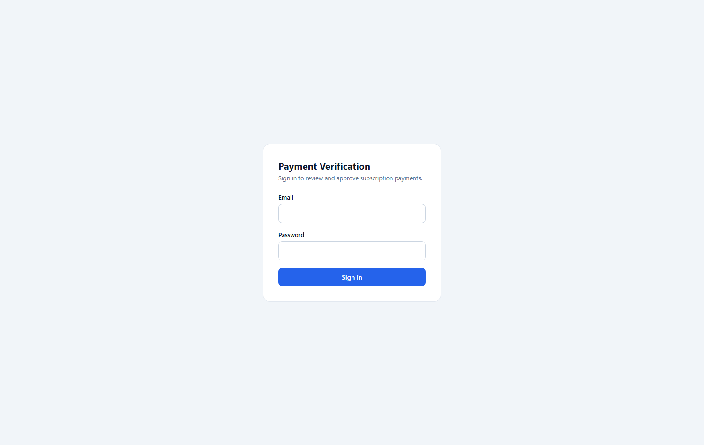
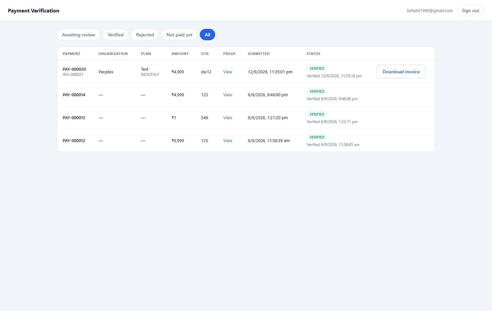
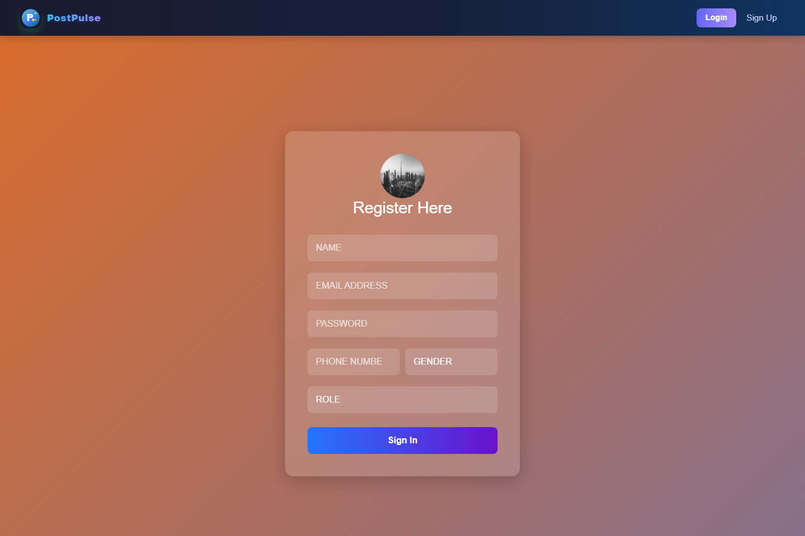
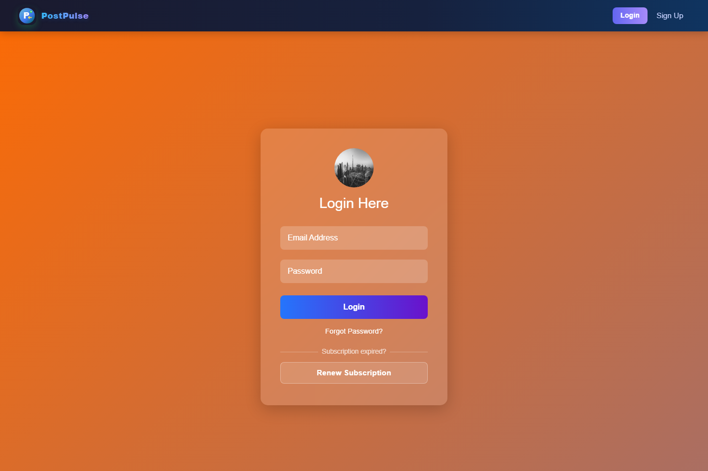
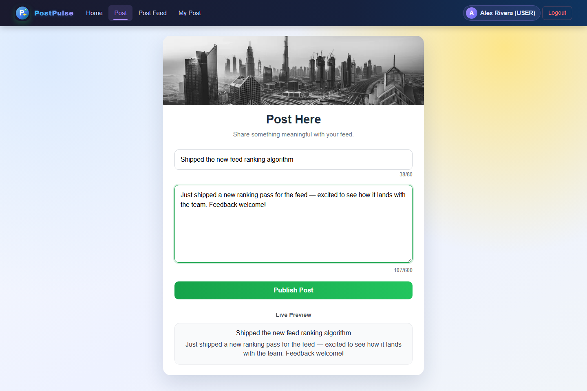
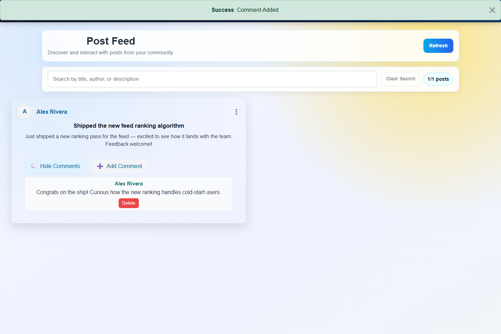
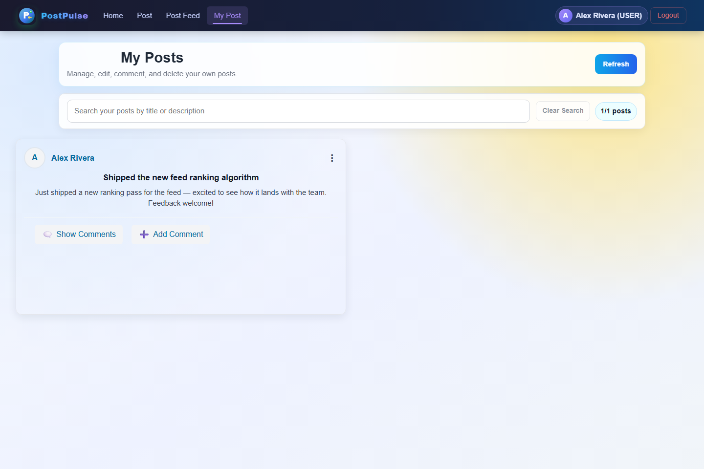
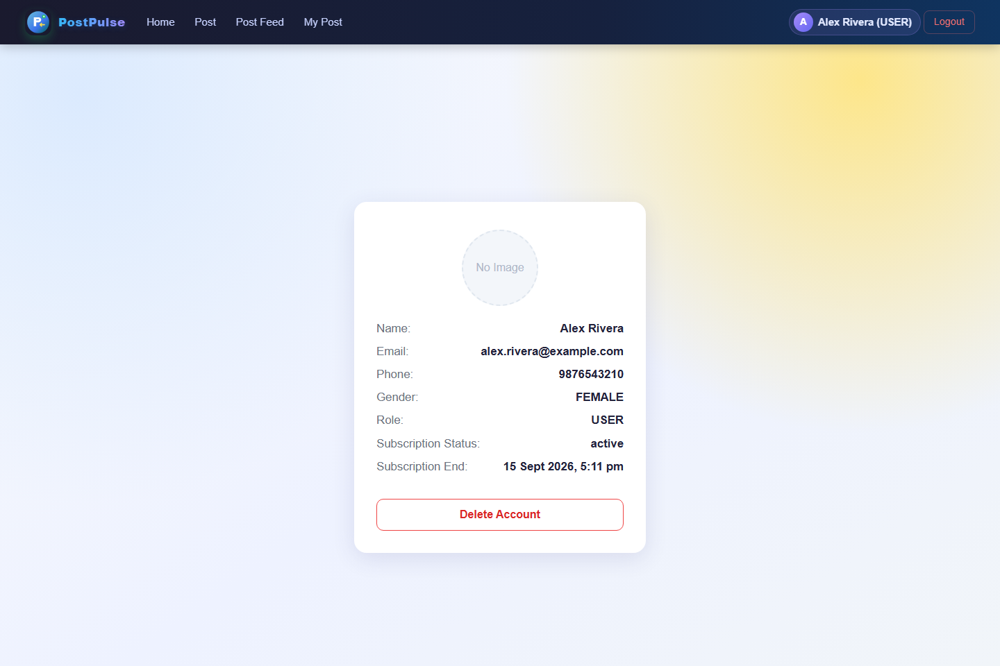

Backend Developer — Kolkata, IN
~2 years building production SaaS platforms.
I design and ship complete features — Postgres/MySQL schemas, JWT-secured REST APIs, and the React UI on top — for multi-tenant products. Currently building Flowdesk, an HR platform running real payroll, attendance, and project tracking for live organisations.
Built end to end — data model through deployed UI.
Case study — 01
Companies run their entire HR operation from it: attendance, leave, payroll, the employee lifecycle, projects & tasks, reimbursements, and their own subscription billing — scoped per organisation.
Frontend and backend deploy independently on Render; production data lives on Supabase Postgres. Every request is scoped to the caller's organisation, with role-based permissions enforced per module.
Case study — 02
UPI payments aren't auto-confirmed by a webhook here — someone has to look at the bank statement. This is that someone's tool: a separate, platform-wide app (its own repo, own deploy) where the person holding the account reviews every organisation's submitted payment, verifies or rejects it with a reason, and pulls the invoice.
Awaiting review / Verified / Rejected / Not paid yet / All — every organisation's payments in one place, not scoped to one tenant.
One click to verify against the UTR and screenshot proof; rejecting requires a reason, shown back to the organisation.
Pulls the matching invoice for any payment — verified, rejected, or still pending — straight from the same billing data Flowdesk generates.
Logs in against Flowdesk's own auth endpoint, then refuses anyone whose role isn't SUPER_ADMIN — a deliberately small, separate deployable.


Case study — 03
A social posting app: accounts, posts, comment threads, profile pictures on S3, and rotating-refresh-token sessions behind a rate limiter. Built as a from-scratch backend architecture exercise, then given a matching React frontend.
JWT access tokens allowlisted in Redis (instant revocation) plus rotating refresh tokens stored per-device, so a stolen refresh token can be revoked without logging everyone out.
Create posts, comment threads underneath them — the core feed data model (post-model, comment-model).
One profile image per user; re-uploading overwrites the previous S3 object and updates the DB record instead of leaking orphaned files.
A subscription model behind the feed, for gating premium behaviour.






Smaller builds — assessments, a game backend, and a few CRUD APIs.
Express + MySQL backend for a multi-school system: superadmin/school-admin/user roles, per-school RBAC on student records.
Real-time backend for a top-down wave shooter — broadcasts live game state to many concurrent players over sockets.
RESTful CRUD API for managing a book catalog.
Static front-end for a food-ordering site — layout and UI, no backend.
CRUD employee-records backend, built for a technical assessment.
Account-records backend, built for a technical assessment.
I like owning things end to end — schema design, API contracts, the UI on top, and the pipeline that ships it. Flowdesk grew from a single HR tool into a multi-tenant SaaS product with its own billing, because that's the kind of problem I like: real workflows, real data, real constraints.
Open to backend / full-stack roles and freelance work.